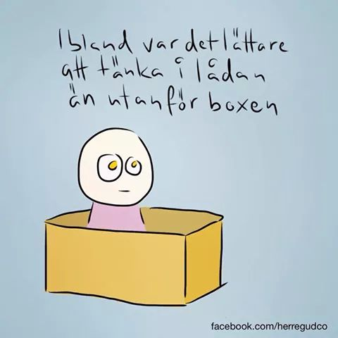

Konungen Kristina
"Jag föddes fri,
jag levde fri
och skall dö frigjord"

Vi behöver alla förebilder och tankar som kan inspirera oss i livet,
om det så är för att våga något nytt,
för att våga låta bli eller bara för ett leende som får oss att orka vidare.
"Jag föddes fri,
jag levde fri
och skall dö frigjord"
"Det är inte min revolution om jag inte kan dansa till den"
"Ibland var det lättare att tänka i lådan än utanför boxen"
Skapad av Royne Mercurio, se fler på hans facebooksida